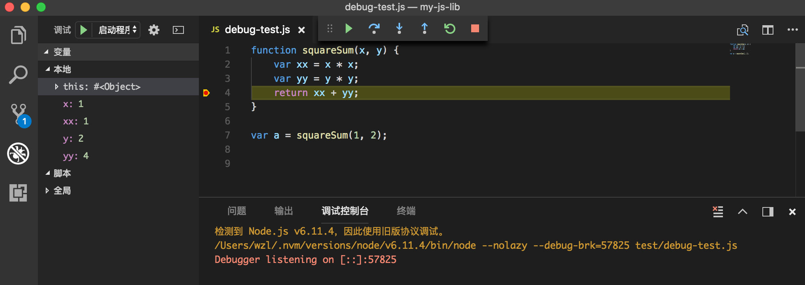

代码编辑器
工欲善其事，必先利其器。
——孔子，《论语·卫灵公》
所谓“工欲善其事，必先利其器”，又有俗语“磨刀不误砍柴工”。好的编辑器是高效开发的必备条件。这里我们介绍几个前端开发中最为常见的编辑器。工作中通常没有人强制你使用哪款编辑器，选择自己喜欢的就好。当然，在决定“皈依”某款编辑器之前，最好是每个主流的编辑器都尝试一下，毕竟你以后就要天天面对着它了。
Sublime Text
Sublime Text 是一套跨平台的文本编辑器，支持基于Python的插件。Sublime Text 是专有软件（意味着在使用、修改上有所限制），可通过包（Package）扩充本身的功能。大多数的包使用自由软件授权发布，并由社区建置维护。Sublime Text 由 Jon Skinner 开发与维护，初始版本于 2008 年发布，目前最新的版本是 Sublime Text 3。
英文 Sublime 意为“卓越的，令人惊叹的”。正如其名，Sublime Text 有着许多让人喜欢的功能：
- “Goto Anything”功能：可快速跳至文件、符号或行数
- “Command Palette”功能：弹性快捷键功能
- 多行编辑：用户可一次选择多行并进行同步编辑。
- 基于 Python 语言的外挂 API
- 针对个别项目使用不同的编辑器设置
- 通过 JSON 文件自定义设置值
- 多面板编辑
- 高性能
- 跨平台（Windows、Linux 和 Mac OS X）
- 代码摘要：用户可替常用的代码片段指定关键字快速插入。
在官网可以下载最新的程序。对于 Mac 系统，安装后创建下面的文件连接可以方便地使用快捷命令启动 Sublime Text。其官网的说明有点瑕疵，这里建议参考 Olivier Lacan[8]的方法，既将快捷命令（symlink）放于 /usr/local/bin 目录下，而非 ~/bin 目录下，因为前者是 OS X 系统的默认可执行程序的加载目录（$PATH里默认有 /usr/local/bin 而没有 ~/bin）：
# 创建 symlink
$ ln -s "/Applications/Sublime Text.app/Contents/SharedSupport/bin/subl" \
/usr/local/bin/subl
# 使用 subl 打开文件、目录
$ subl .
放到 /usr/local/bin 目录下，也更符合 FHS（Filesystem Hierarchy Standard
，文件系统层级结构标准）[10]的建议，即 /usr/local 目录适合存放系统管理员在本机自行安装的软件。
关于 symlink
术语 symlink 的全称是 symbolic link，即“符号链接”，或所谓的“软链接”（soft link），是指某文件的内容包含指向其他文件或目录的地址。软链接在 1978 年的小型机操作系统里（如 DEC）就得到了实现，如今已被列入到 POSIX 标准中。因此所有的类 UNIX 系统，如 FreeBSD、Linux、Mac OS X，都支持此特性；Windows 系统下类似的功能是“快捷方式”。[9]
连接文件的文件类型属性标志为[l]，如果像上面那样软连接 subl，那么可以查看其属性：
$ cd /usr/local/bin
$ ls -l
# 第一个属性为 l
lrwxr-xr-x 1 zilong admin 62 4 20 22:09 subl -> /Applications/Sublime Text.app/Contents/SharedSupport/bin/subl
与软链接相对的是硬链接。二者的最大区别在于，硬链接与被链接的文件具有相同的 inode 号，而软链接本身有自己的 inode 号且与被链接的文件的 inode 号不同。
Vim
Vim 是从 vi（visual editor 的缩写，Bill Joy 发明） 发展出来的一个具有 TUI（Text User Interface，文本用户界面，与 GUI，即图形用户界面相对应）的编辑器。Vi 是所有的类 UNIX 系统都会内置安装的文本编辑器，而且相当多的软件的编辑接口都会主动调用 vi。Vim 可以认为是 vi 的升级版，其代码补全、编译及错误跳转等方便编程的功能特别丰富，在程序员中被广泛使用。Vim 的第一个版本由布莱姆·米勒（Bram Moolenaar）在 1991 年发布，源码主要由 C 语言写成。Vim 最初的简称是 Vi IMitation，随着功能的不断增加，正式名称改成了 Vi IMproved。现在是在开放源代码方式下发行的自由软件。[4]
Vim 对重复性操作进行了很好的优化。“对于 Vim 高手来说，Vim 能以思考的速度编辑文本”，这是对 Vim 最流行的描述。即便不把它作为自己的常用编辑器，在登录到服务器上的时候，Vim 很可能就是你唯一可用的编辑器。所以，Vim 应当作为前端程序员的必备技能之一。
MacOS X 和 Linux 系统都预装了一个可以开箱即用的轻量级 Vim。可以通过输入 vim 命令查看当前所用 Vim 的版本。当前的最新版本是7.4，如果要想获得更多的功能，最好还是重新安装一下：
# Mac OS X
$ brew install vim
# Linux Ubuntu
$ sudo apt-get update
$ sudo apt-get install vim
Vim 有四种常见模式（mode），在不同的模式下，即便相同的按键，也可能有不同的结果。
- 普通模式——Vim 的默认状态，在这里可以进行高效率的操作。例如，按下
dd（两次d）键可以删掉一行文本。 - 文本插入模式——一种所见即所得的状态。在普通模式下，按
i、a、A等键均可进入插入模式；而按esc键，或者按组合键ctrl+[则可以退出插入模式，回到普通模式。 - 可视模式——可视模式允许我们选中一块文本区域并在其上进行操作。
- 命令行模式——在命令行模式中可以输入会被解释并执行的文本。例如执行命令（":"键），搜索（"/"和"?"键）或者过滤命令（"!"键）。
Emacs
Emacs 意为 Editing MACros，即宏编辑。Emacs 在 1970 年代诞生于 MIT 人工智能实验室（MIT AI Lab），源码主要是使用 ELisp 写成。Emacs 不仅仅是一个编辑器，它本质上是一个集成环境，进入到编辑器后，用户会感觉如同进入了一个功能完备的子操作系统中去，因为你可以在这里收发电子邮件、通过 Telnet 登录远程主机、上 Twitter、玩游戏以及浏览网站等等。因此，一个流行的笑话声称 Emacs 是一个伪装成编辑器的操作系统。
Emacs 被设计为可编程的编辑器，设计者赋予了它可以驱动其他工具的能力，结果就是 Emacs 支持在一个共享的上下文环境中处理所有的文本操作——文件、邮件、新闻、调试符号。它可以用作任何拥有交互文本界面命令的定制前端。Emacs 功能丰富，也意味着庞大臃肿，启动通常较慢。设计者希望用户可能一旦进入 Emacs，就不会再退出它。
注：在 Unix 文化里，Emacs 是程序员们关于编辑器之战的两大主角之一，另一个主角就是上面提到的 Vim/vi。
Mac OS 自带一个 GNU Emacs，在终端里输入 emacs 命令并回车，即可进入该程序的界面。可以通过 Homebrew 重新安装或升级 Emacs：
# 安装
brew install emacs --with-cocoa
# 升级
brew upgrade emacs
# 启动 GNU Emacs
emacs
Emacs 的入门参考书是《Learning GNU Emacs》（[美] Debra Cameron 著）。
VSCode
VSCode 全称 Visual Studio Code，于 2016 年正式发布。微软在互联网浪潮中曾一度被大家遗忘，近些年则十分热衷于开源项目。不但开源了自家最新的浏览器 Edge 的所有代码，还精心打造了 VSCode 这样一款非常适合前端开发人员的编辑器。与 Sublime Text、Vim 相比，VSCode 是经典的集成开发环境（IDE），除了常规的语法分析、语法高亮，它还有这些特性：
- 像 C/C++ 的开发环境 Visual Studio 那样在编辑器内调试 Node.js 代码
- 内嵌了一个终端
用户可以在 VSCode 中指定一个启动脚本（在 .vscode/launch.json 中指定），然后在相关的 JS 源文件上面直接打断点，启动调试[7]。例如下面的代码，我们在第四行添加了一个断点，然后启动调试，VSCode 就会执行这个文件，然后在断点处停下，此时可以方便地查看变量值、调用堆栈等信息：
